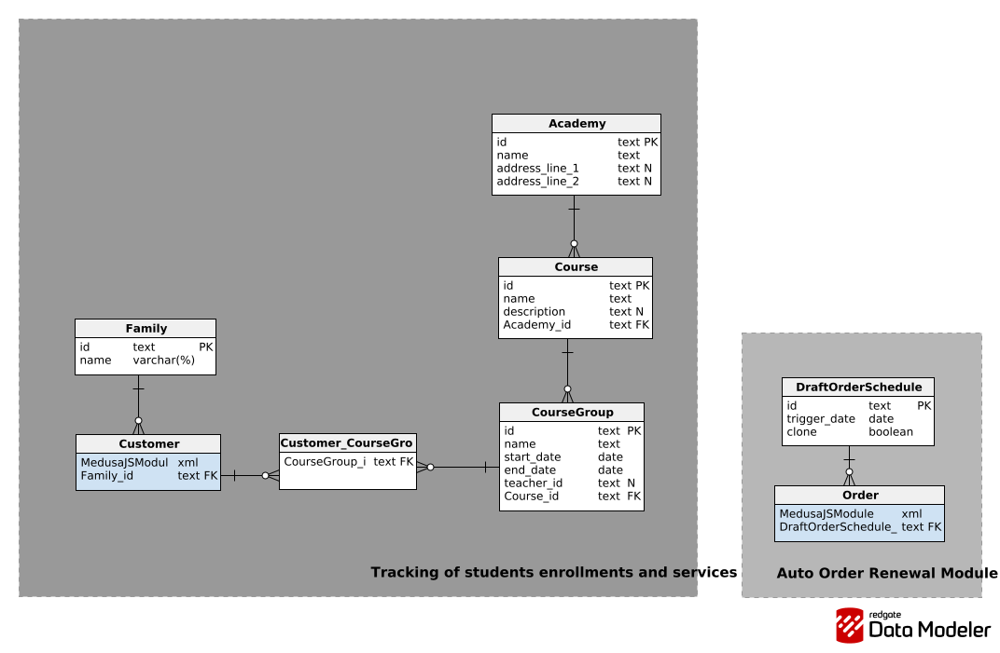

Igor Kordaczuk
My GitHub Projects

My GitHub Projects
Custom extension for MedusaJS developed for szkolaorlow.pl to streamline the enrollment and payment management process for educational courses.
Academy Point is a backend system built on top of MedusaJS designed to automate and simplify the process of managing course enrollments for students.
Previously, the client handled registrations via email and phone, and stored enrollment data in Excel spreadsheets. Processing these records required significant manual work and made it difficult to track customer history, manage recurring services, and collect payments efficiently.
The goal of this project was to create a system that:
The system allows staff to create and manage orders for families enrolling children in courses or tutoring sessions, while customers receive email notifications and can pay for their orders online.

The client runs an educational institution offering:
Each family may enroll multiple children into different courses. The system supports managing families, students, and course enrollments while maintaining full visibility into orders, payments, and service fulfillment.
The platform includes a payment automation system integrated with:
Customers receive an email containing their order and a payment link. They can complete the payment independently without staff intervention.
Key capabilities:
A custom family management module was implemented to reflect the real-world structure of the client’s customers.
Create family student and parent profiles to simplify order management and billing.
Edit family members
Schedule upcoming billing for a family
Draft order renewal
The system introduces domain logic for managing:
Each student can be assigned to specific course groups, allowing administrators to track whether the services delivered match the ordered and paid services.
AcademyPoint allows a quick overview of which student attends which class groups, enabling the owner to efficiently verify whether course billing aligns with the lists of participants assigned to each group.
The solution is implemented as a custom extension to MedusaJS, leveraging its modular architecture to introduce domain-specific functionality.
Core components include:
The backend acts as the operational hub for managing educational services and customer payments.
Developed for: szkolaorlow.pl
Educational services provider specializing in courses and tutoring
for students.